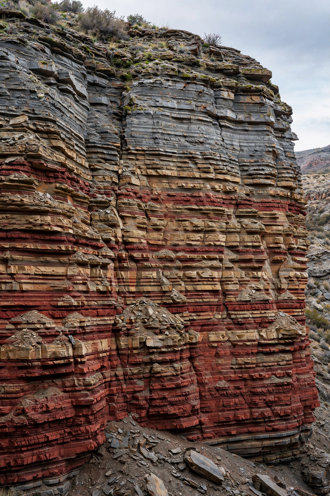

From Wikipedia, the free encyclopedia
| Geochronology | |
|---|---|
 Rock strata record relative ages; isotopes give absolute ones | |
| Field | Geology |
| Core methods | Radiometric dating; stratigraphy; magnetostratigraphy; biostratigraphy |
| Key systems | U–Pb, 40Ar/39Ar, K–Ar, Rb–Sr, Sm–Nd, radiocarbon |
Geochronology is the science of determining the age of rocks, fossils and sediments and the timing of events in Earth history. It supplies the numerical backbone of the geologic time scale — the eons, eras, periods and epochs into which the 4.54-billion-year history of the Earth is divided — and underpins fields from tectonics to palaeontology and archaeology.
Classical stratigraphy orders rocks relatively: in undisturbed sequences younger layers lie above older ones (superposition), faunas succeed each other in a recognisable order (faunal succession), and magnetic reversals imprinted in rocks provide a global barcode. Absolute (numerical) ages come overwhelmingly from radiometric dating, which measures the decay of radioactive parent isotopes into stable daughters at known half-lives.
Nineteenth-century geologists such as Hutton and Lyell grasped the vastness of geological time qualitatively; Lord Kelvin's physical calculations (20–100 million years) constrained it wrongly until radioactivity — discovered in 1896 — both invalidated his assumptions and provided the dating tool. Bertram Boltwood published the first radiometric ages in 1907, and Arthur Holmes championed the method for decades. Clair Patterson's 1956 lead-isotope work on meteorites fixed the Earth's age at about 4.55 billion years. Modern mass spectrometry (SHRIMP, TIMS, MC-ICP-MS) now achieves precisions better than 0.1 percent, allowing events such as the end-Cretaceous extinction to be dated to within a few tens of thousands of years.